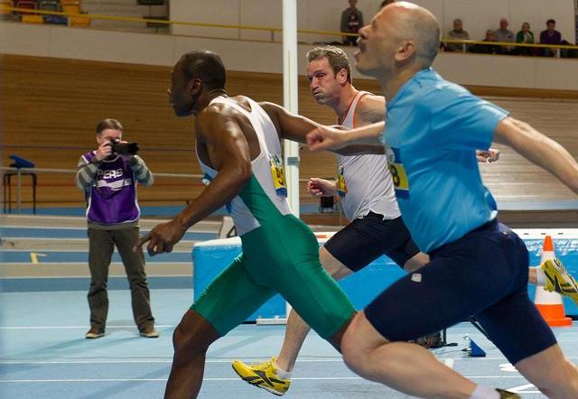

Participating at National Championships
Outdoor
| Year | Category | Event | Round | Result | Position | Date | Location |
|---|
| 2018 | M55 |
100m |
series | 13.32 (+0.8) | 3 | 2 jun 2018 | Gouda |
| final | DNS | --- |
| 200m |
series | DNS | --- | 3 jun 2018 |
| 2017 | M55 |
100m |
series | 13.23 (+3.4) | 2 | 10 jun 2017 | Gouda |
| final | 12.97 (+0.4) | 3 |
| 200m |
series | 30.18 (+1.4) | 3 | 11 jun 2017 |
| final | DNS | --- |
| 2016 | M55 |
100m |
final | 13.10 (-1.5) | 2 | 11 jun 2017 | Amersfoort |
| 200m |
series | 30.17 (-0.3) | 3 | 12 jun 2017 |
| final | 28.14 (+0.3) | 5 |
| 2015 | M55 |
200m |
final | 26.50 (+2.3) | 1 | 14 jun 2015 | Zierikzee |
| 2014 | M50 |
100m |
final | 12.59 (+3.8) | 1 | 14 jun 2014 | Utrecht |
| 200m |
final | 29.85 (+2.5) | 8 | 15 jun 2014 |
| 2013 | M50 |
100m |
series | 13:14 (-2.0) | 2 | 8 jun 2013 | Epe |
| final | 12.73 (-1.4) | 2 |
| 200m |
series | 26.78 (-0.7) | 3 | 9 jun 2013 |
| final | 26.61 (-1.9) | 4 |
| 2012 | M50 |
200m |
series | 27.34 (+0.2) | 1 | 10 jun 2012 | Terneuzen |
| final | 26.82 (-0.8) | 4 |
| 2011 | M50 |
200m |
series | 28.94 (-2.0) | 3? | 19 jun 2011 | Den Haag |
| final | 40.39 (-2.1) | 5? |
| 2010 | M50 |
400m |
series | 1:02.37 | 3 | 12 jun 2010 | Oosterhout |
| final | 1:21.32 | 4 |
| 100m |
series | 13.13 (+0.8) | 4 |
| final | 13.30 (-2.0) | 4 |
Indoor
| Year | Category | Event | Round | Result | Position | Date | Location |
|---|
| 2019 | M55 |
60m |
final | 8.37 | 5 | 2 feb 2019 | Apeldoorn Omnisport |
| 2018 | M55 |
60m |
final | 8.21 | 1 | 3 feb 2018 | Apeldoorn Omnisport |
| 200m |
final | 29.22 | 5 | 4 feb 2018 |
| 2017 | M55 |
60m |
series | 8.95 | 3 | 4 feb 2017 | Apeldoorn Omnisport |
| final | 8.26 | 3 |
| 200m |
series | 28.54 | 4 | 5 feb 2017 |
| final | 28.17 | 4 |
| 2016 | M55 |
60m |
final | 8.20 | 1 | 13 feb 2016 | Apeldoorn Omnisport |
| 200m |
final | 27.61 | 2 | 14 feb 2016 |
| 2015 | M55 |
60m |
final | 7.94 | 1 | 14 feb 2015 | Apeldoorn Omnisport |
| 200m |
final | 26.98 | 1 | 15 feb 2015 |
| 2014 | M50 |
60m |
final | 8.03 | 2 | 15 feb 2014 | Apeldoorn Omnisport |
| 200m |
series | 31.27 | 3 | 16 feb 2014 |
| final | 26.58 | 3 |
| 2013 | M50 |
60m |
series | 8.03 | ?? | 9 feb 2013 | Apeldoorn Omnisport |
| final | 7.88 | 3 |
| 200m |
series | 26.93 | ?? | 10 feb 2013 |
| final | DNF | -- |
| 2012 | M50 |
200m |
series | 28.50 | 1 | 4 mrt 2012 | Apeldoorn Omnisport |
| final | 27.27 | 2 |
| 60m |
series | 8.30 | 4 |
| final | 8.17 | 3 |
| 2011 | M50 |
400m |
series | 1:03.64 | 2 | 27 feb 2011 | Apeldoorn Omnisport |
final | DNQ | -- |
| 200m |
series | 26.26 | 1 |
| final | 25.98 | 3 |
| 60m |
series | 7.99 | 3 |
| final | 8.12 | 5 |
| 2010 | M50 |
200m |
final | 26.62 | 3 | 14 feb 2010 | Apeldoorn Omnisport |
| 400m |
final | 1:03.95 | 3 |
| 60m |
series | 8.22 | 3 |
| final | 8.03 | 3 |
